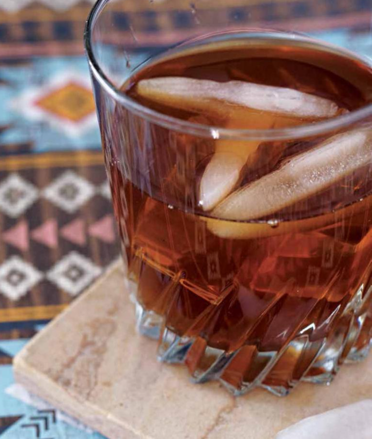

Deadeye
Goes down smooth and hits like a flashbang.
While a steaming pot of black piñon coffee will get the gears going on an early-morning mission,
sometimes Cassidy Cole prefers a drink with a little more bite.
Made at the notorious Calaveras bar, featuring black tea and bourbon.
Ingredients
- 2 cups boiling water
- ½ cup sugar
- 4 black tea bags
- 4 ounces bourbon, divided
- Ice
- Lemon and mint to garnish
Steps
- Combine the water, sugar, and tea bags in a heatproof medium-size mixing bowl or pitcher.
- Stir the water until the sugar has dissolved completely, and then let the mixture steep for 5 minutes.
- Take out the tea bags and chill the tea mixture for around an hour, or until cold.
- Mix half the tea mixture with 2 ounces bourbon, and then pour over ice in a lowball glass. Garnish with lemon and mint.